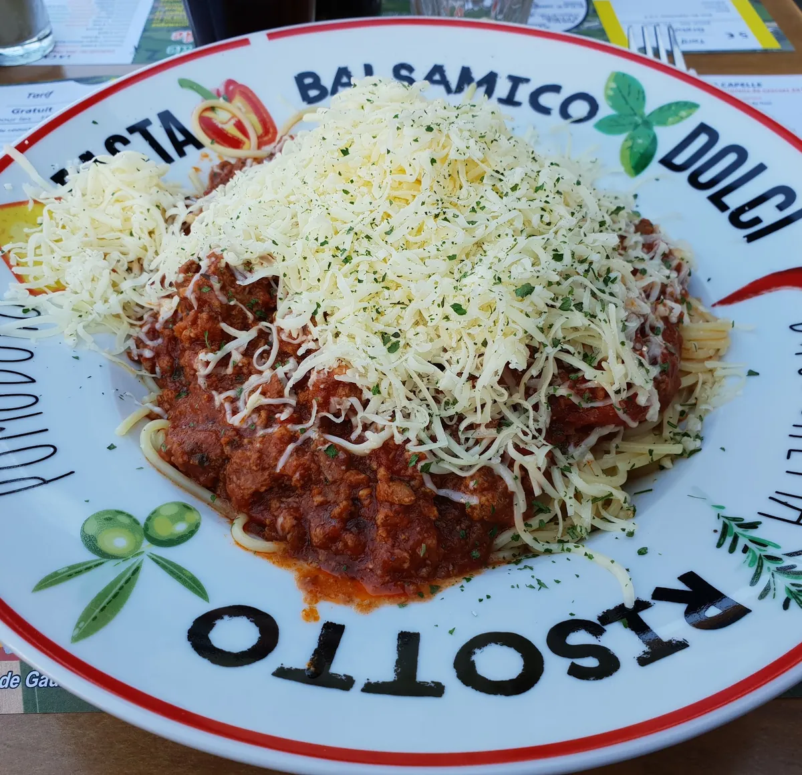
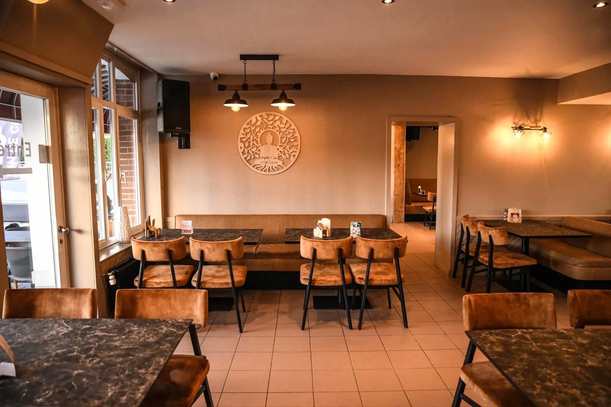
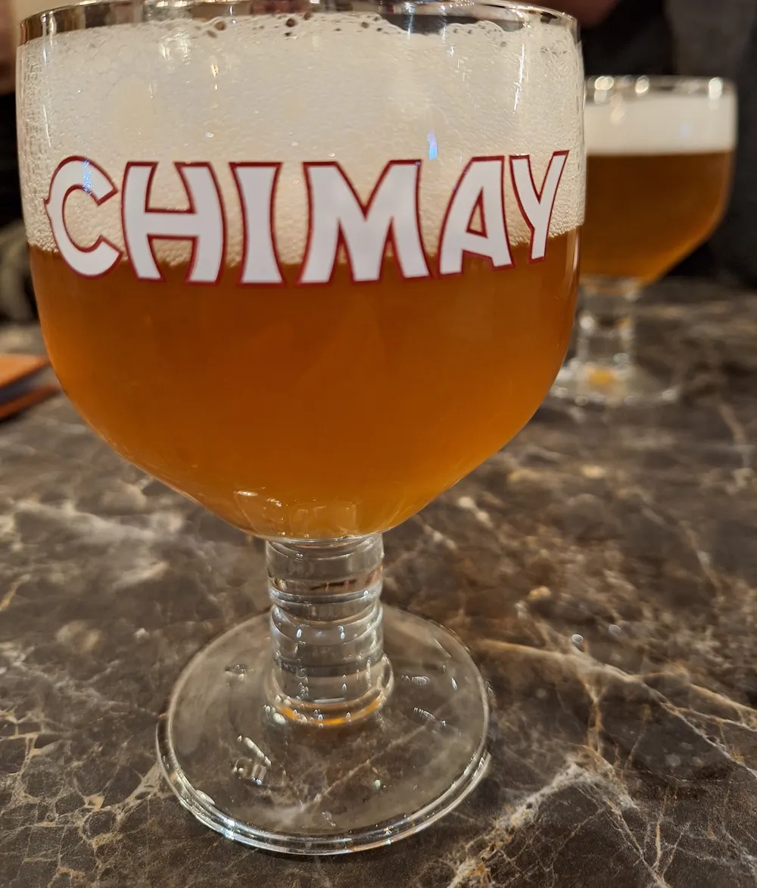
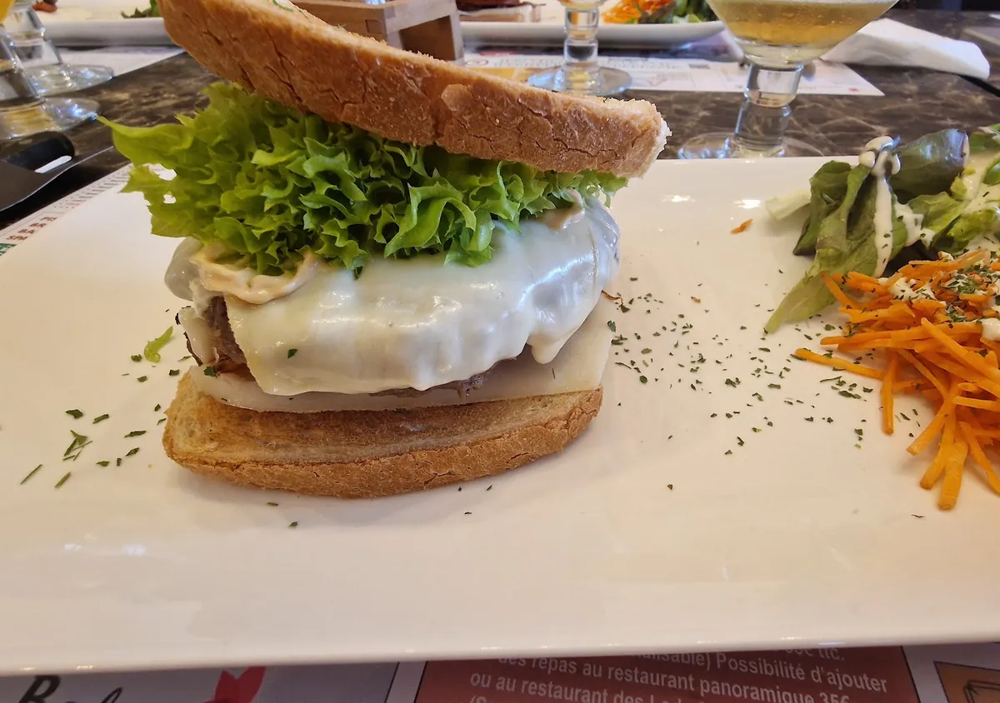
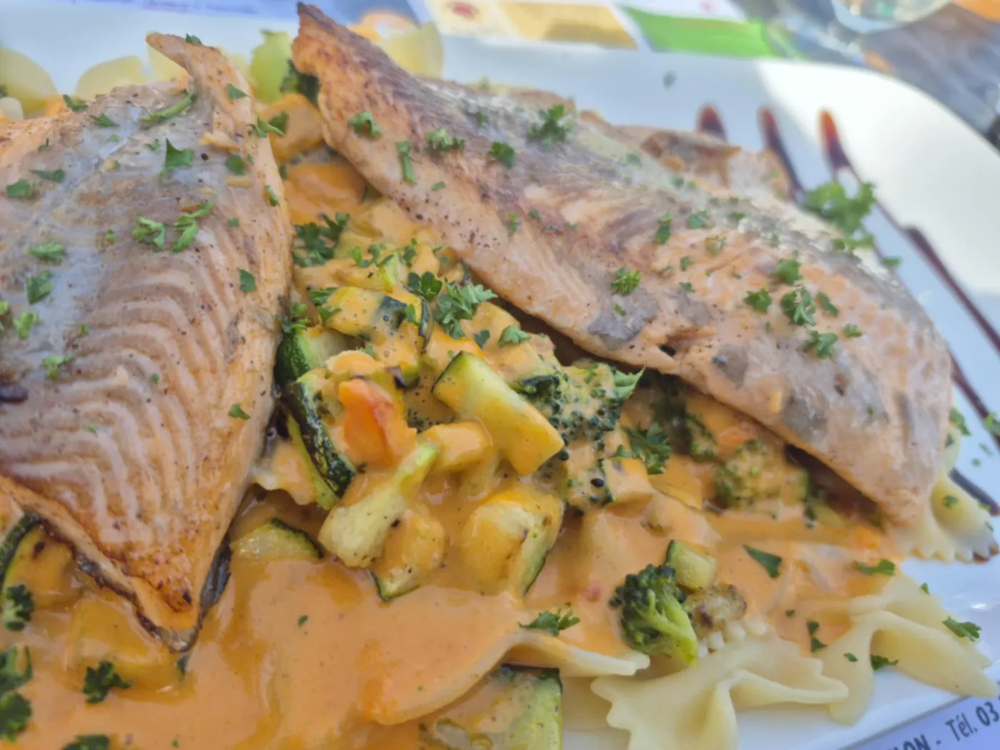
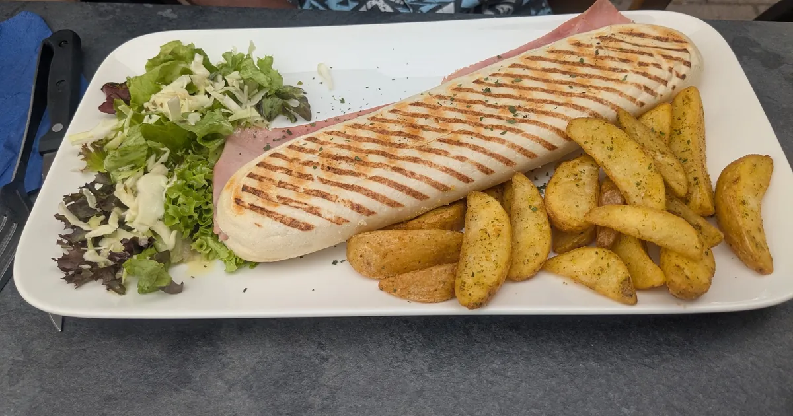
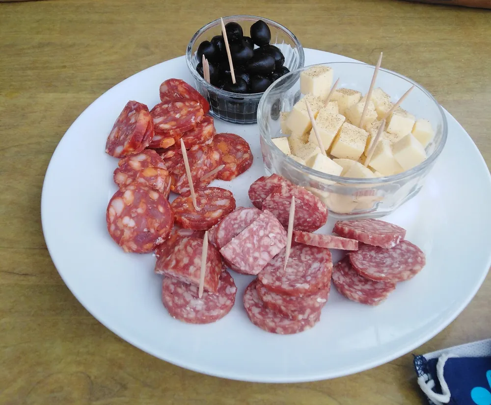
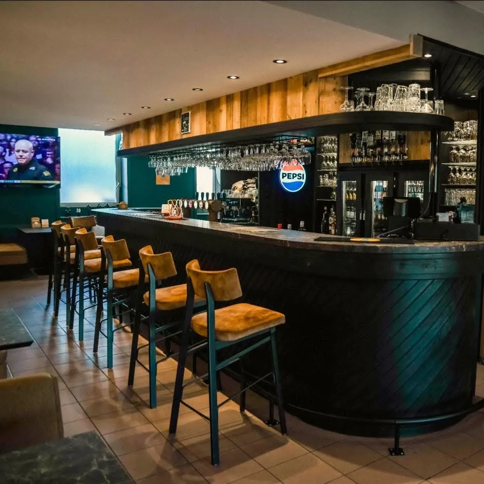
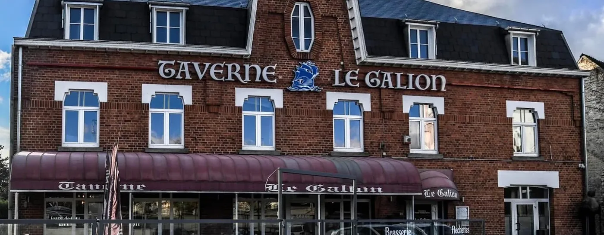
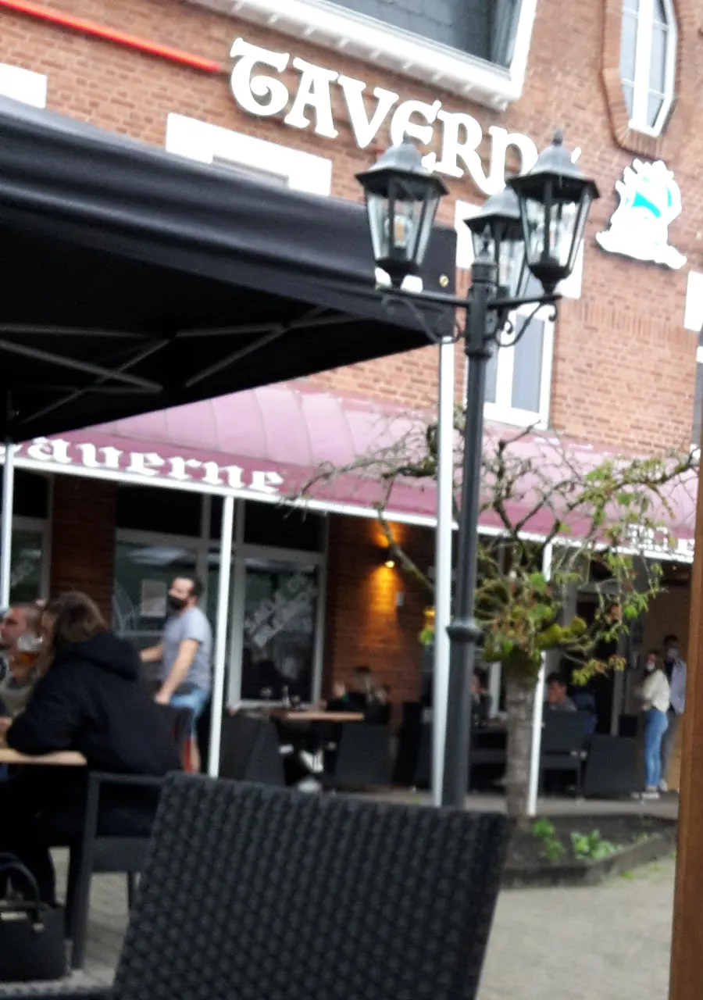

Les pâtes
Spaghetti bolognaise
Sauce tomate à la viande, sous une belle couche de fromage râpé. Pâtes, omelettes, croques et salades : c'est la carte que citent les clients.

Taverne · brasserie · Chimay
Lasagnes et burger maison, omelettes, croques, pâtes, salades, et une Chimay dans son verre. La taverne de la rue des Ormeaux vous attend six jours sur sept, dès 11 h.
Six jours sur sept, dès 11 h
Parking privéTerrasseBillards et fléchettes

Un arrêt lunch pendant une sortie à vélo, un dimanche midi en famille ou une planche avec une bière en fin de journée : voici ce qui sort de la cuisine du Galion, photographié par ses clients.

Sauce tomate à la viande, sous une belle couche de fromage râpé. Pâtes, omelettes, croques et salades : c'est la carte que citent les clients.

Sur pain toasté, avec salade et carottes râpées.

Courgettes, brocoli et légumes en sauce crémeuse, persil frais.

Au jambon, avec potatoes et salade.

Salami, dés de fromage et olives noires, à piquer entre amis.
Le jour, l'heure, le nombre de couverts : trois gestes, et votre table vous attend rue des Ormeaux, avec le parking juste devant.
Fermé le mercrediParking privé pour la clientèleUn groupe ? 0472 86 38 99
Cuir cognac, marbre sombre et lumière chaude en salle, un long comptoir pour la bière, et la grande façade de brique rouge où le galion bleu tient la proue.


Pour un repas tranquille, à côté de la salle principale.
De quoi prolonger la soirée après le repas.
Devant la taverne, sans tourner dans Chimay.
L'entrée est accessible aux fauteuils roulants.
Omelette, croque ou salade pendant une sortie à vélo.

| lundi | 11 h – 23 h |
|---|---|
| mardi | 11 h – 23 h |
| mercredi | fermé |
| jeudi | 11 h – minuit |
| vendredi | 10 h – 1 h |
| samedi | 11 h – 1 h |
| dimanche | 11 h – 23 h |
Rue des Ormeaux 30, 6460 Chimay
Parking privé pour la clientèle